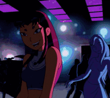

Visual Design (GIF)

Utilizzo le GIF per creare l'identità estetica del canale, bilanciando minimalismo e impatto visivo.
Una rivisitazione dei miei brani preferiti in chiave "Slowed and Reverbed".

| Metrica | Risultato |
|---|---|
| Visualizzazioni Canale | + 4.000.000 |
| Tempo di Visualizzazione | + 4.000 h |

Utilizzo le GIF per creare l'identità estetica del canale, bilanciando minimalismo e impatto visivo.
Editing ridotto al minimo per ottenere l'effetto "Slowed & Reverb" perfetto, preservando l'anima del brano originale.